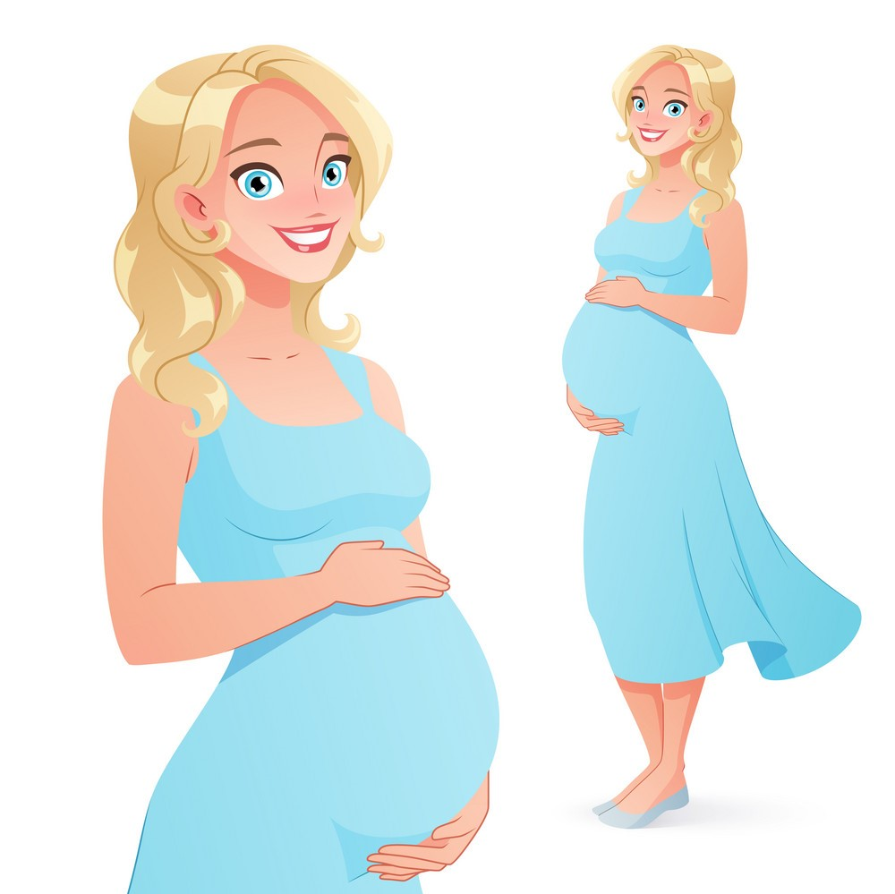

Getting good care before, during, and after
your pregnancy is very important. It can help your baby
grow and develop and keep you both healthy. It is the best way to be sure your little one gets a
head start on a healthy life. Join our platform which provide you the best possible care which might
be beneficial fot you as well as for your baby. Get help with doctors sitting home. Get your goods
and services delivered home. Get all your work done by the maid provided to you at lowest price.
Hire Baby Sitters all verified and of your choice. Stay Healthy, Stay Motivated with WayLady..

Register yourself as Maid
As we know job of maid is not that easy, and
what is difficult than that is finding a proper job with security. Thus this platform solve your
problems. Get employed by just registering yourself here. We will reach you provide you the jobs and
will clear out all your doubts. So now be Independent and Passionate with your life.
Register yourself as Volunteer
The benefits of volunteering can be enormous. Volunteering offers vital help to
people in need, worthwhile causes, and the community, but the benefits can be even greater for you,
the volunteer. The right match can help you to find friends, connect with the community, learn new
skills, and even advance your career.Giving to others can also help protect your mental and physical health. It can reduce stress, combat
depression, keep you mentally stimulated, and provide a sense of purpose. While it’s true that the
more you volunteer, the more benefits you’ll experience, volunteering doesn’t have to involve a
long-term commitment or take a huge amount of time out of your busy day. Giving in even simple ways
can help those in need and improve your health and happiness. Thus interested one can connect with us provide their valuable time to provide help to the needy. They get employed along with that they improve their state of well being.